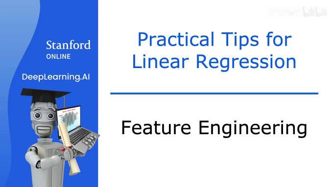
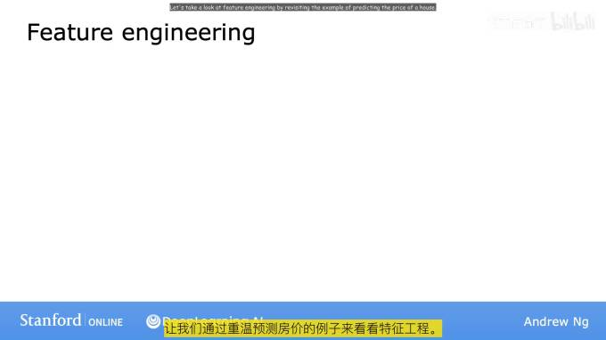
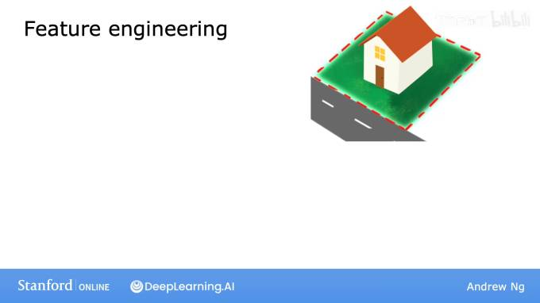
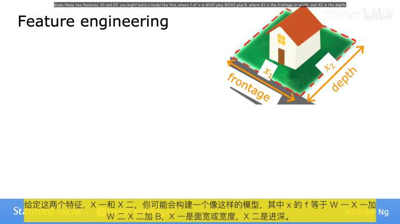
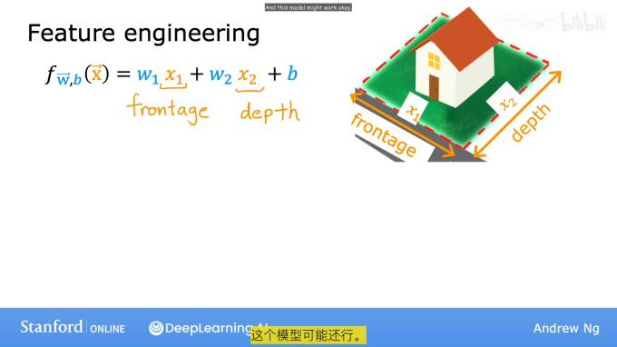
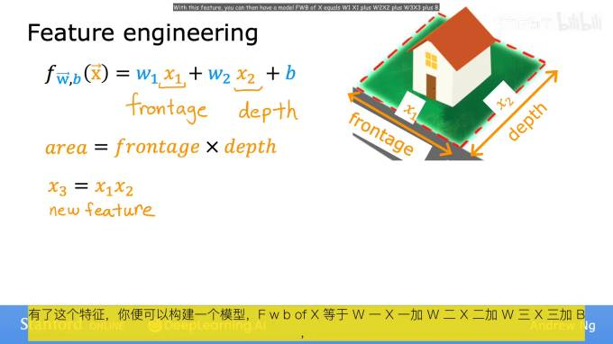
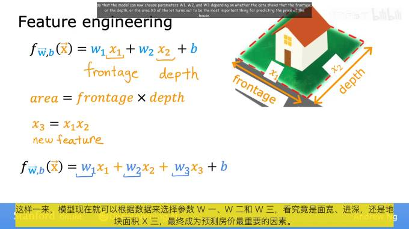
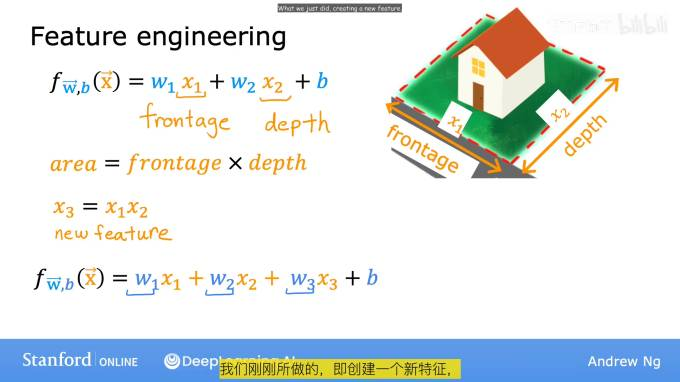
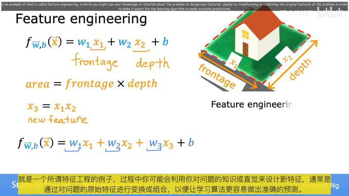
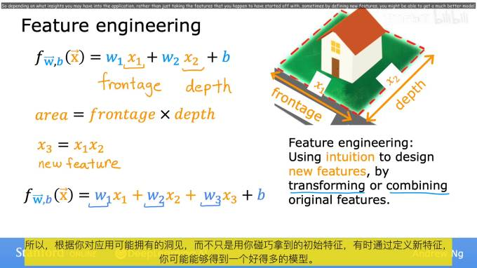

00:02特征的选择会对你的学习算法的性能产生巨大影响。

00:07事实上，对于许多实际应用来说，选择或设计正确的特征是让算法良好运行的关键一步。
00:17在本视频中，我们来看看你如何为你的学习算法选择或设计最合适的特征。
00:24让我们通过重温预测房价的例子来看看特征工程。


00:31假设每栋房子你有两个特征。
00:34x 一是房子所建地块的临街宽度。
00:40这在房地产中也叫地块的面宽。
00:45而第二个特征，x 二，是这块地的大小里的进深，我们假设房子建在一块矩形土地上。
00:54给定这两个特征，x 一和 x 二，你可能会构建一个像这样的模型，其中 x 的 f 等于 W 一 x 一加 W 二 X 二加 B，X 一是面宽或宽度，X 二是进深。


01:13但这里有另一种选择，你可以在模型中以不同方式使用这些特征，这可能会更有效。
01:22你可能会注意到，土地的面积可以通过面宽或宽度乘以进深来计算。
01:30而且你可能有一种直觉，土地面积比单独作为特征的面宽和进深更能预测价格。
01:39所以，你或许可以定义一个新特征 x 三，等于 x 一乘以 x 二。
01:45于是这个新特征 x 三就等于地块的面积。
01:50有了这个特征，你便可以构建一个模型，Fwb ofx 等于 W 一 x 一加 W 二 x 二加 W 三 x 三加 B。

02:02这样一来，模型现在就可以根据数据来选择参数 W 一、W 二和 W 三，看究竟是面宽、进深，还是地块面积 X 三，最终成为预测房价最重要的因素。

02:18我们刚刚所做的，即创建一个新特征，就是一个所谓特征工程的例子，过程中你可能会利用你对问题的知识或直觉来设计新特征，通常是通过对问题的原始特征进行变换或组合，以便让学习算法更容易做出准确的预测。w。


02:41所以，根据你对应用可能拥有的洞见，而不只是用你碰巧拿到的初始特征，有时通过定义新特征，你可能能够得到一个好得多的模型。

02:58而事实上，有一种特征工程的方法，可以让你不仅能拟合直线，还能在你的数据上拟合曲线、非线性函数。
03:10让我们在下一个视频中，看看你该如何做到这一点。